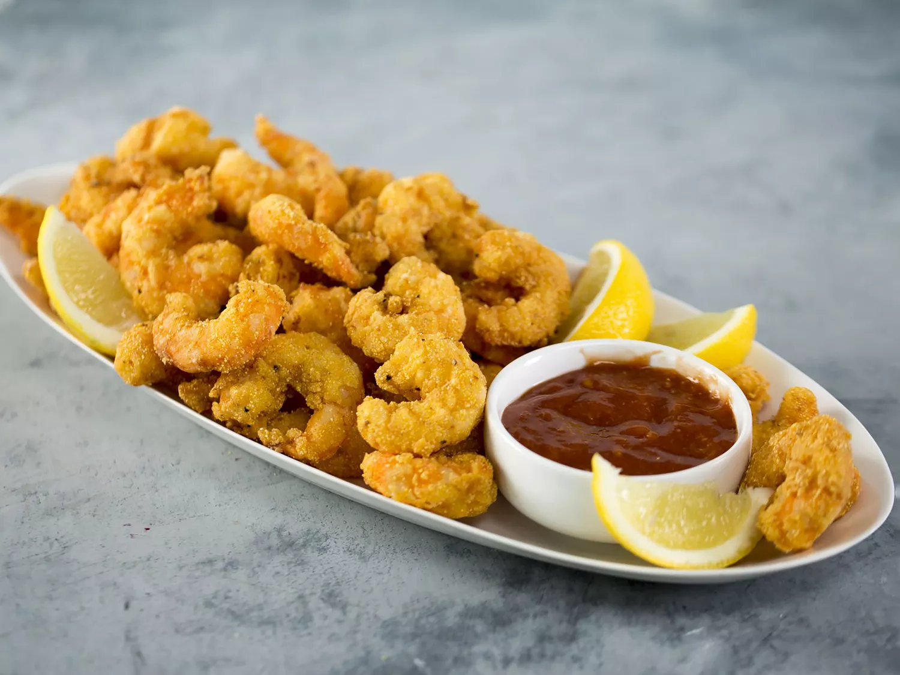

Fried Shrimp

Perfect Fried Shrimp
There truly is nothing better than a crispy, crunchy batch of fried shrimp. This easy, no-fuss recipe is perfect when
that salty craving hits. Serve these lil' poppers in a po' boy or taco, or just enjoy them straight up with lemon
wedges, cocktail sauce, and rémoulade.
Ingredients
3 cups canola oil, or as needed
2 large eggs, beaten
1 cup whole milk
2 tablespoons chile hot sauce (such as Cholula®)
2 pounds large peeled, deveined raw shrimp
3/4 cup all-purpose flour
2/3 cup cornmeal
1 1/2 teaspoons kosher salt
1 teaspoon freshly ground black pepper
1/2 teaspoon cayenne pepper
Instructions
Pour oil to a depth of 2 inches in a large deep skillet; heat over medium-high to 370 degrees F (185 degrees C).
Whisk together eggs, milk, and hot sauce in a shallow dish; add shrimp to mixture, and toss to coat. Whisk together
flour, cornmeal, salt, black pepper, and cayenne pepper in a separate shallow dish.
Remove 6 to 8 shrimp from egg mixture, shaking excess off; dredge in flour mixture. Place dredged shrimp in hot oil; fry
until coating is golden and crisp, about 2 minutes. Remove with a slotted spoon to a baking sheet lined with paper
towels. Repeat with remaining shrimp, bringing oil back to 370 degrees F(185 degrees C) over medium-high heat before
adding each batch of shrimp.